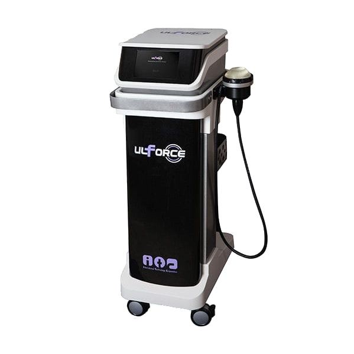
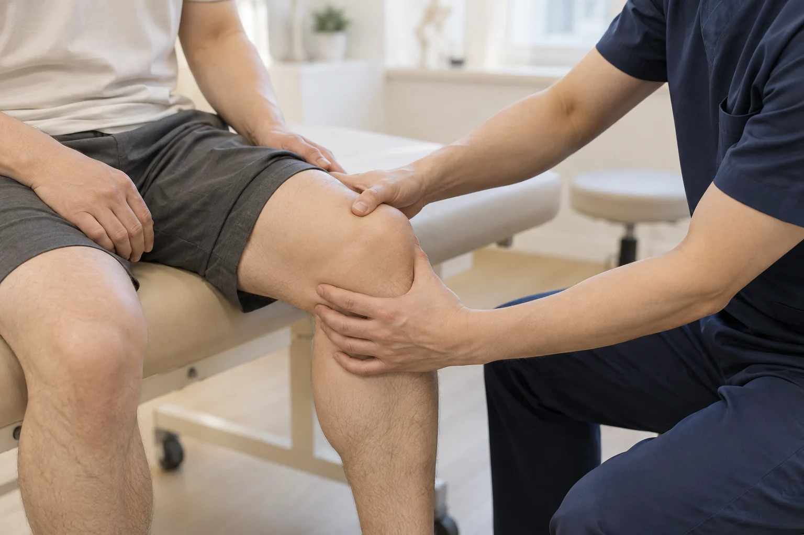
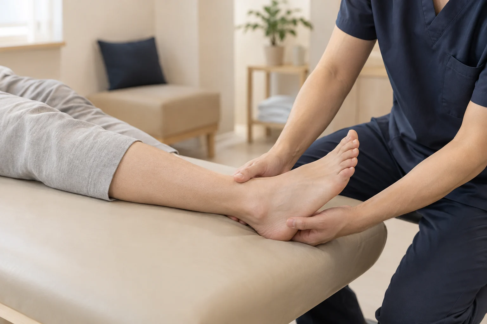

RECOVERY CARE
조직 회복에 기통찬 체외충격파
단순한 통증 완화를 넘어, 손상된 힘줄과 인대의 재생과 회복을 돕습니다.
체외충격파(ESWT) 치료는 통증이 오래 머문 부위에 음향 에너지를 전달해,
굳고 지친 힘줄과 인대에 자극을 주고
손상된 조직의 자연적인 회복을 돕는 비수술 치료입니다.

POINT 3
기통찬 체외충격파 핵심 포인트
손상된 조직의 재생과 회복 유도
일시적인 통증 완화에 그치지 않고, 손상된 힘줄과 인대의 재생과 회복을 촉진하여 통증의 근본 원인을 치료합니다.
석회 분해 및 만성 염증 완화
석회성 병변의 분해와 흡수를 촉진하고,
잘 낫지 않는 만성 힘줄 염증의 개선을 돕습니다.
부작용 및 절개 부담 없는 안전함
마취, 절개, 약물 투여가 없어 흉터나 약물 부작용 걱정 없이 안전하게 치료받을 수 있습니다.
WHAT MAKES IT DIFFERENT
기통찬 체외충격파의 핵심 포인트
통증 부위를 넘어 원인까지 찾아가는 충격파 치료
원장의 진찰을 통해 통증을 유발하는 근육과 힘줄의 문제를 찾아 치료 방향을 세웁니다.
원장과 치료사가 함께하는 체계적인 협진
원장이 설정한 치료 방향을 바탕으로 치료사가 환자의 상태와 반응에 맞춰 치료 부위와 강도를 조절하고, 치료 경과를 공유하며 방향을 조정해 나갑니다.
INDICATION
주요 적용 질환
질환별 특성과 치료가 필요한 부위를 안내해드립니다.



